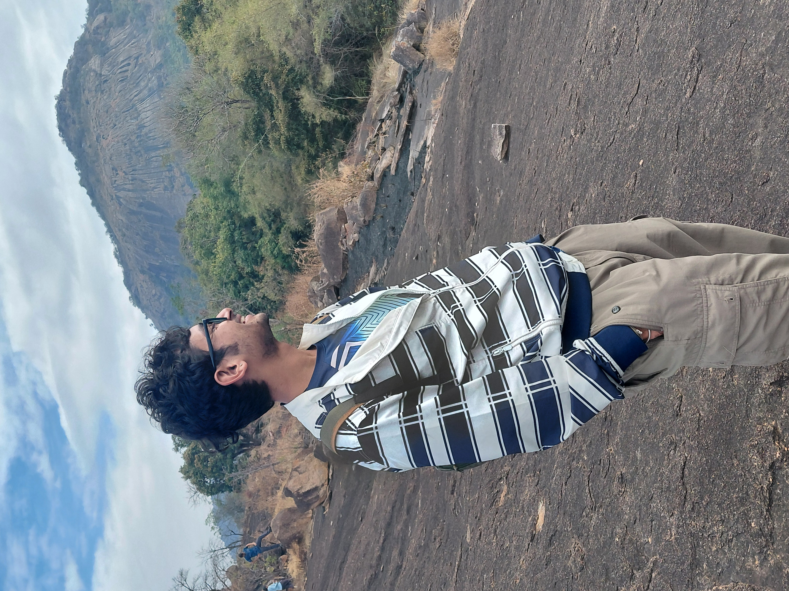

Graduate Student in Smart Mobility and Logistics Systems, Centre for Infrastructure, Sustainable Transportation and Urban Planning (CiSTUP), Indian Institute of Science (IISc), Bengaluru
I am currently enrolled in the Masters program in Smart Mobility and Logistics Systems at the Indian Institute of Science (IISc), Bengaluru, where I conduct research at the Centre for Infrastructure, Sustainable Transportation and Urban Planning (CiSTUP). My research interests lie in the fields of transport network science, machine learning for cyber-physical systems, choice modelling, and intelligent urban mobility.
In particular, I have developed semiring-based Dijkstra algorithms for multimodal route planning, worked on robust deep neural networks for contributor verification, and conducted ground surveys for factors influencing commuter choice in Bengaluru.
Prior to my Master, I obtained a Bachelor of Technology (B.Tech) in Civil Engineering from the National Institute of Technology (NIT), Hamirpur (2024). I have worked as a Junior Research Fellow at the Indian Institute of Remote Sensing (IIRS), Dehradun, where I contributed to the NICES project on bathymetry estimation using ICESat-2 photon data.
I have also completed research internships and technical training at IIT Roorkee, BISAG-N, and the Defence Laboratory (DRDO), Jodhpur, focusing on GIS applications, terrain analysis, and hyperspectral datasets.
The summary above is mostly written by AI :)

An interactive map of research experiences with DRDO, BISAG-N, and IIRS–ISRO. Hover over markers to link lab and study-area pairs.
An operational study diagnosing warehouse over-utilisation (191.7% of designed capacity) at India's largest land port. Developed a five-layer IoT data architecture, implemented ABC-XYZ zonation algorithms, and modeled a discrete-event simulation in Python (using AnyLogic) to achieve a projected sub-6-hour truck clearance window.
Read Capstone Report →Designed and implemented an algebraic routing engine in Python that unifies road and BMTC bus networks into a single category-theoretic graph. Using a generalized Dijkstra algorithm, the engine computes optimal paths across interchangeable semirings representing distance, time, fare, safety, or lexicographic combinations.
Read Project Report →Formulated and implemented a unified "estimate-then-predict" travel demand pipeline in Julia (using JuMP and MOSEK). The convex optimization framework jointly estimates destination, nested-mode, and path-size route choice parameters, resolving the classic sequential feedback issues of traditional four-step models.
Read Case Study →Geospatial analytics and visualization for last-mile connectivity and urban transport efficiency across Indian cities.
View Analysis Report →Built multi-branch Deep Neural Networks (DNNs) with aggressive regularization (L2 and Dropout) to verify authorship contributors. Solved a binary classification problem across 25,000 articles using text sequence embeddings and categorical feature inputs with Keras.
Read Project Report →A vehicle-mounted, edge-deployed system for auditing urban lighting infrastructure. Trained object detection baselines (YOLOv5, YOLOv8) on custom nighttime drive-by video sequences. Implemented post-training quantization (INT8) and pruning techniques to optimize inference frame rates for edge devices like Raspberry Pi.
View Project Details →SWOT Mission with Wide-Swath Altimetry: Observations and Insights into India’s Inland Waterbodies
Research Communication · Indian Institute of Remote Sensing
Nadir and Wide Swath Altimetry for Inland Water Bodies
Technical Report · Indian Institute of Remote Sensing